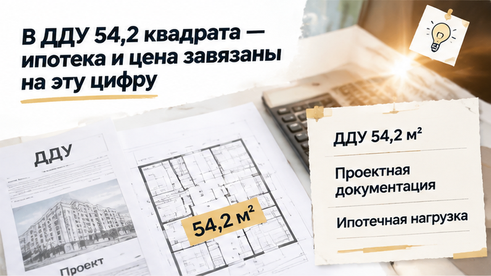
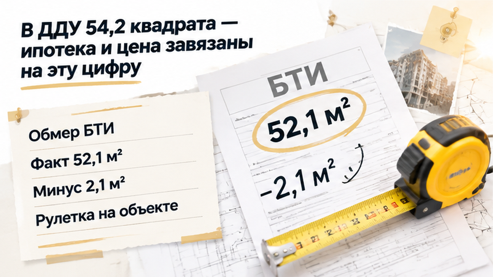
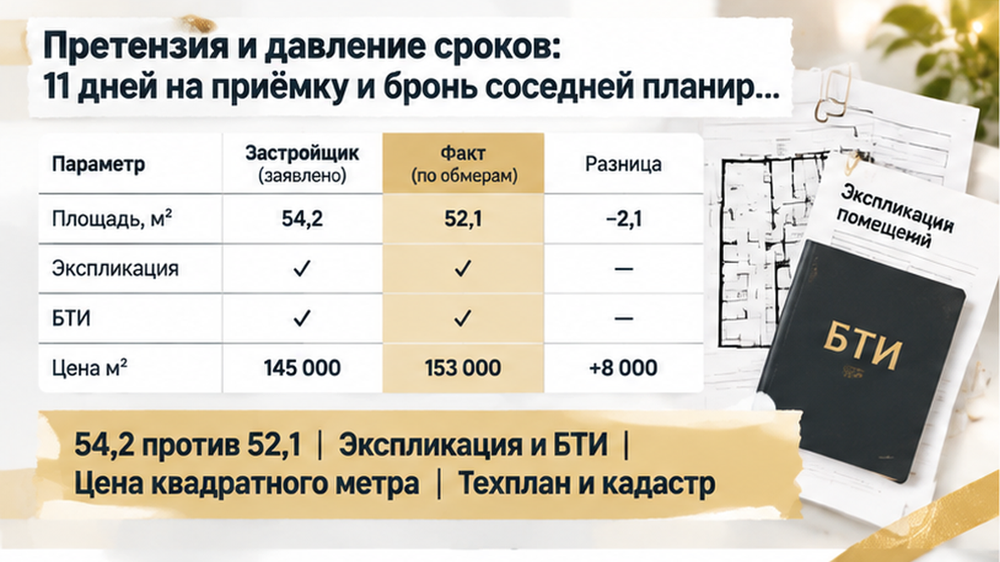
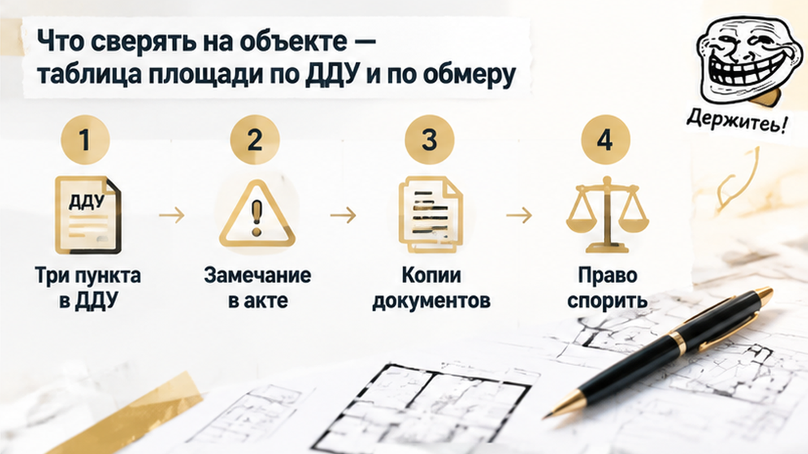

В сентябре 2026 года на приёмке в тюменской новостройке семья вместо обещанных 54,2 м² увидела в документах 52,1 — минус 2,1 квадрата и около 210 тысяч рублей по предварительному расчёту. На столе лежал передаточный акт, рядом — рулетка, а менеджер спокойно объяснял: «Проектные отклонения в пределах нормы». Для семьи это были не сантиметры на плане: на эти 54,2 квадрата уже рассчитали цену квартиры, первоначальный взнос и ипотечный платёж. Застройщик предложил скидку 90 тысяч рублей и попросил подписать акт «как есть», но семья уехала без ключей.
Я — Святослав Шакин, The Риэлтор из Тюмени. Такие ситуации разбираю без канцелярита в Telegram. Короткие сообщения и полезные материалы также выходят в MAX.

Когда семья выбирала двушку, площадь 54,2 м² была указана в договоре долевого участия и проектной документации. От неё зависела не только цена квартиры, но и первоначальный взнос, и размер ипотечной нагрузки.
Поэтому метраж в ДДУ — не рекламное обещание менеджера. Это часть финансовых условий сделки. Если в итоге передают меньше, нужно смотреть не на слова в коридоре, а на договор и официальные документы обмера.
В самом ДДУ важно найти, какая именно площадь указана: общая или приведённая, входит ли в неё лоджия, как учитываются балкон и другие помещения. Там же может быть написано, при каком отклонении делают перерасчёт, а при каком — нет.
Формулировки в договорах отличаются. Универсального правила «несколько метров можно потерять без последствий» не существует: решающим будет конкретный пункт ДДУ и порядок расчёта, который стороны в нём закрепили.

Уведомление о готовности квартиры семья получила за 11 дней до приёмки. В сентябре они приехали на объект, открыли документы и сверили договорную площадь с итоговыми сведениями обмера и БТИ.
Вместо 54,2 м² там стояло 52,1 м². Разница — 2,1 м², то есть примерно 3,9% от площади по ДДУ.
Рулетка помогла заметить проблему прямо на месте, но сама по себе спор не решает. Для денежного расчёта нужны технический план, экспликация и официальные данные, на основании которых определили итоговую площадь.
Менеджер сослался на проектные отклонения и предложил передать квартиру со скидкой 90 тысяч рублей. Для семьи это выглядело иначе: если недостающую площадь предварительно оценивали примерно в 180–220 тысяч, скидка могла не соответствовать расчёту по договору.
Но и сумма около 210 тысяч не возникает автоматически только из разницы между двумя цифрами. Сначала нужно понять, какая цена квадратного метра указана в ДДУ, какой предел отклонения там предусмотрен и сравниваются ли одинаковые виды площади.
Менеджер говорил спокойно, будто речь шла о мелочи:
«Это в пределах проектных отклонений. Подписывайте акт, получайте ключи — не будем задерживать оформление».
Но фраза «в пределах нормы» сама по себе не меняет цену квартиры. Сначала нужно открыть ДДУ и найти конкретный пункт: какой предел отклонения установлен, как при нём считается стоимость и учитывается ли в расчёте лоджия или балкон.
Разница между 54,2 и 52,1 м² составила 2,1 м² — примерно 3,9% договорной площади. Это ещё не готовый ответ ни в пользу застройщика, ни автоматически в пользу покупателя. Решает не разговор у двери, а текст договора и официальный обмер.
Покупатель вправе попросить показать, почему цена не пересчитывается. Какой пункт ДДУ это разрешает? Где указан предел отклонения? Каким документом подтверждена фактическая площадь?
Ответ «у нас так принято» условия договора не заменяет.
Акт с формулировкой об отсутствии претензий тоже не стоит подписывать автоматически только потому, что назначен день передачи ключей. Расхождение лучше зафиксировать в акте осмотра, отдельном заявлении или письменной претензии. После подписи доказывать свою позицию обычно сложнее.
После разговора о площади застройщик предложил семье скидку 90 тысяч рублей. Не перерасчёт по условиям ДДУ, а именно скидку — взамен на подписание передаточного акта.
Покупатели попросили показать, откуда взялась эта сумма. Понятного расчёта не получили и не стали подписывать документ «как есть».
По предварительной оценке, стоимость недостающей площади могла находиться примерно в диапазоне 180–220 тысяч рублей. Ориентир около 210 тысяч нельзя считать окончательной суммой без цены квадратного метра и текста конкретного ДДУ. Поэтому сравнение «90 тысяч против 210» — это повод проверить расчёт, а не готовое требование, которое возникает само собой.
Обычно из площади по договору вычитают фактическую площадь и тот предел отклонения, который разрешён самим ДДУ. Оставшуюся разницу умножают на цену квадратного метра. Но в одном договоре может быть свой порядок, а спор может зависеть от того, сравниваются ли общая площадь, приведённая площадь или площадь без учёта лоджии.
Семья зафиксировала расхождение и направила застройщику претензию. В ней указали: в ДДУ — 54,2 м², в итоговых сведениях — 52,1 м², разница — 2,1 м². Покупатели попросили предоставить расчёт и рассмотреть изменение цены по договору.
Претензия не означает, что деньги выплатят на следующий день. Если договориться не удастся, значение будут иметь сам ДДУ, официальные документы обмера, переписка и то, как оформлялась передача квартиры.
Здесь важно разделять две вещи: принять квартиру и согласиться с окончательной ценой. Если один документ одновременно передаёт объект и подтверждает отсутствие претензий, подписывать его только ради ключей рискованно.
Квартира меньше на 2,1 м²: согласиться на предложенные 90 тысяч рублей или добиваться перерасчёта примерно на 210 тысяч по условиям ДДУ? Почему покупатель должен оплачивать метры, которых не получил?
У семьи оставалось 11 дней с момента уведомления о готовности квартиры. За это время нужно было разобраться с итоговой площадью и понять, на каком основании застройщик предлагает принять 52,1 м² вместо 54,2.
Одновременно сгорала бронь на соседнюю планировку: до её отмены оставалось 48 часов. Такой срок хорошо давит на покупателя. Вместо спокойной проверки документов появляется паника: нужно успеть, пока бронь не отменили. Кажется, что на вопросы и обдумывание уже нет времени.
Но бронь не отвечает на главный вопрос: что именно написано в ДДУ о расхождении площади? Поэтому семья не стала подписывать передаточный акт в предложенной редакции. Расхождение оформили в документах и отправили застройщику письменное обращение — с просьбой показать расчёт по метражу и пересмотреть стоимость квартиры.
Если менеджер говорит: «Это в пределах нормы», попросите показать соответствующий пункт договора. Если предлагают 90 тысяч рублей, запросите письменный расчёт: от какой площади и цены он сделан, что именно считается скидкой и прекращает ли её принятие дальнейшие требования.
Федеральный закон № 214-ФЗ допускает требование о соразмерном уменьшении цены, если переданный объект имеет меньшую площадь. Но это не означает автоматический возврат за каждый недостающий метр. Разница в 3,9% сама по себе также не означает автоматического расторжения договора.
Похожая проблема возникает, когда обещание в договоре расходится с результатом приёмки. В разборе приёмки квартиры с разногласиями показано, почему фраза «подпишем сейчас, потом исправим» может оставить покупателя без удобной фиксации позиции.

Рулетка помогает заметить проблему, но сама по себе не решает денежный спор. Для расчёта нужны технический план, экспликация, сведения БТИ и документы, использованные для кадастрового учёта.
| Что проверить | В ДДУ | В итоговом обмере | Зачем |
|---|---|---|---|
| Общая площадь | 54,2 м² | 52,1 м² | Определить расхождение |
| Состав площади | Помещения, лоджия или балкон | Экспликация и площадь помещений | Не сравнить разные виды площади |
| Допустимое отклонение | Пункт договора и предел | Фактическая разница | Понять порядок расчёта |
| Цена квадратного метра | Цена в ДДУ | Не текущий рекламный прайс | Проверить перерасчёт |
| Подтверждающие документы | ДДУ и приложения | Техплан, БТИ, экспликация, кадастровые сведения | Не опираться только на слова менеджера |
| Передаточный акт | Условия передачи и замечаний | Разногласия и приложения | Зафиксировать позицию до подписи |

Обычно из разницы между договорной и фактической площадью вычитают предусмотренный договором предел, а остаток умножают на цену метра по ДДУ. Но эта формула работает только при наличии соответствующего условия. Нельзя автоматически вычитать 1 м², 1% или 5% со слов менеджера.
Если документов не хватает, их можно запросить письменно: технический план, экспликацию, расчёт по помещениям и основание внесения площади в итоговые сведения. При споре о методике измерения может потребоваться независимый кадастровый инженер.
В ДДУ заранее стоит найти три пункта: как описана площадь, как меняется цена и что происходит при отклонении. При несовпадении с техпланом или актом заберите копии документов и зафиксируйте вопрос письменно.
Похожие расхождения бывают и в других характеристиках объекта. В одном случае в ДДУ была указана квартира, а в выписке обнаружились апартаменты — здесь сравнивали договор и документы. В другом покупателю обещали кладовку, но на ключах помещения не оказалось: обещание в ДДУ сопоставляли с фактической передачей. А документы при сдаче новостройки могут повлиять на ипотечный транш — это разобрано в материале о доме, который сдали без разрешения на ввод.
Перед приёмкой выделите в договоре описание метража, порядок перерасчёта и допустимое отклонение. На объекте сверьте техплан и экспликацию с тем, что написано в ДДУ — так вопросы к застройщику будут про документы, а не про догадки.
При любом несовпадении не ставьте подпись под «чистым» актом: опишите замечание в акте осмотра и отправьте застройщику обращение с копиями документов. Именно так семья в этой истории сохранила право спорить уже после встречи — без ключей в руках и без признания, что всё устроило.